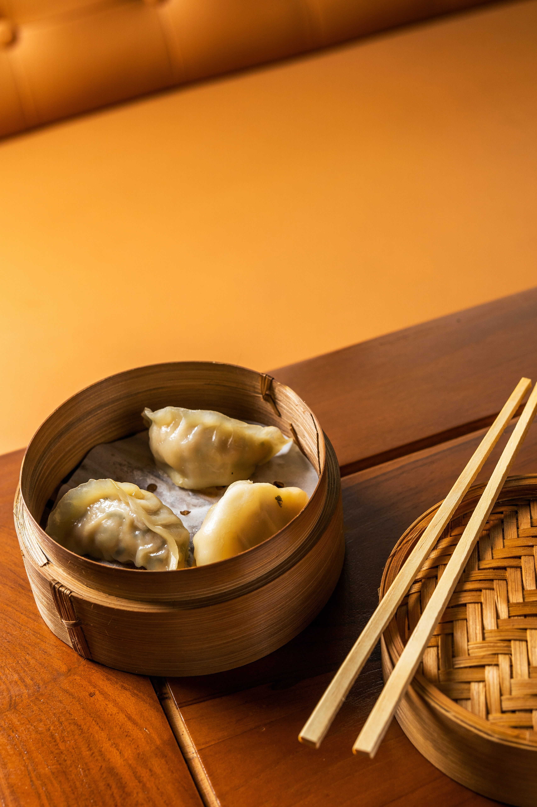

Dim Sum

Description
Dim sum is a large range of small Cantonese dishes that are traditionally enjoyed in restaurants for brunch. Most modern dim sum dishes are commonly associated with Cantonese cuisine, although dim sum dishes also exist in other Chinese cuisines.
Ingredients
- 1 cup all-purpose flour
- 2 teaspoons baking powder
- 1 teaspoon white sugar
- 1/2 teaspoon salt
- 1 tablespoon maragarine
- 1/2 cup milk
Steps
- Stir together the flour, baking powder, sugar and salt in a bowl.
- Stir in milk and butter until a thick batter forms.
- drop batter by spoonfuls into boiling stew or soup. Cover and simmer without lifting the lid for 15 minutes.
- Serve.